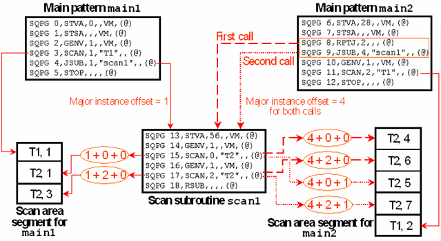

Understanding Scan Subroutines
When executing the SCAN instructions of a pattern, the scan instances for these instructions are read from the associated scan area segment in sequential order; successive SCAN instructions use successive data. This principle of reading the instance data sequentially also holds for patterns containing calls of scan subroutines. This has two main consequences:
- Scan subroutines have no scan area segment of their own. All data for the SCAN instructions they contain (parallel parts and template instances) is stored in the scan area segments of the calling patterns according to the position of the subroutine call within the sequencer program of these patterns.
- When a pattern calls a scan subroutine n times in a counted loop (JSUB and RPTJ instructions), the data for the SCAN instructions of the subroutine must be stored n times in the scan area segments of the calling pattern.
Thus, the data for any SCAN instruction within a scan subroutine is stored at a different location for every call of the subroutine. Since each of these different scan area sections must be associated with a different instance number, the "instance number" specified with a SCAN instruction of the subroutine cannot be the actual instance number any more. Rather, the real instance numbers are calculated as the sum of
- a major instance offset, which must be specified with the call of the subroutine (see the format of the JSUB instruction in Inserting Sequencer Instructions ),
- the "instance number" of the SCAN instruction, which is now called the minor instance offset, and
- a loop index, which starts from 0 and is incremented by 1 after each call in a counted loop.
If the major and the minor instance offsets are suitably chosen, then this sum will in fact be different for all these different scan area sections.
The following figure illustrates the principles:

Observe that all this only holds for the scan instances of the subroutine. With respect to the parallel vectors, scan subroutines do not differ from ordinary SVEC subpatterns. Each of them has its own parallel area segment where its parallel vectors are stored. The start address of this segment is specified in the STVA instruction, which is the first instruction of the subroutine sequencer program.